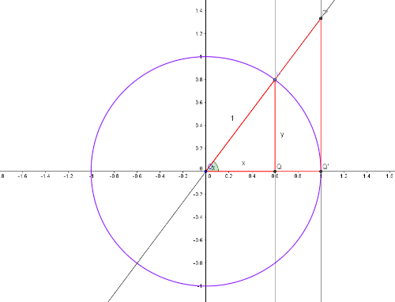

Tema 2: Trigonometria
Raons trigonomètriques
L'any passat vau veure com es definien les raons trigonomètriques d'un angle agut a partir d'un triangle rectangle.

En el triangle rectangle que veiem, les raons trigonomètriques de l'angle $\alpha$ (vèrtex $A$) són les següents:
| Raó | magnitud |
|---|---|
| $sin \alpha$ | $\frac{a}{b}$ |
| $cos \alpha$ | $\frac{c}{d}$ |
| $tg \alpha$ | $\frac{a}{c}$ |
A partir d'aquestes 3 raons trigonomètriques se'n poden definir unes altres 3, encara que són menys utilitzades. La secant, la cosecant i la cotangent:
| Raó | Definició |
|---|---|
| $sec \alpha$ | $\frac{1}{cos \alpha}$ |
| $cosec \alpha$ | $\frac{1}{ sin \alpha}$ |
| $cot \alpha$ | $\frac{1}{tg \alpha}= \frac{cos \alpha}{ sin \alpha}$ |
Raons de 30º, 45º, 60º, 90º i 180º graus
Aquests 4 angles surten molt sovint en diferents càlculs i és per això que és bo de recordar les seves raons trigonomètriques. Les podeu veure escrites a la taula següent:
| Raó | $30^o$ | $45^o$ | $60^o$ | $90^o$ | $180^o$ |
|---|---|---|---|---|---|
| $sin$ | $\frac{1}{2}$ | $\frac{\sqrt{2}}{2}$ | $\frac{\sqrt{3}}{2}$ | $1$ | $0$ |
| $cos$ | $\frac{\sqrt{3}}{2}$ | $\frac{\sqrt{2}}{2}$ | $\frac{1}{2}$ | $0$ | $-1$ |
| $tg$ | $\frac{\sqrt{3}}{3}$ | $1$ | $\sqrt{3}$ | $\nexists$ | $0$ |
Hi ha una regla mnemotècnica per recordar les raons de 30, 45 i 60 graus. Si ens fixem en la part de la taula que conté aquests valors, només cal per la fila del sinus escriure $1$, $2$ $3$ en aquest ordre. Llavors prenem l'arrel d'aquests valors (i recordem que $\sqrt{1}=1$). Finalment dividim el resultat per $2$ i ja tenim els sinus. Pel que fa els cosinus, escrivim $3$, $2$, $1$per 30, 45 i 60 graus respectivament. Després repetim l'operació anterior. Ja tenim els cosinus. Per les tangents, és la divisió del sinus entre el cosinus.
La circumferència unitat
Construïm una circumferència de radi $1$ tal i com podem veure a la figura. Definim un punt $P(x,y)$ sobre la circumferència. Aquest punt defineix un angle $\alpha$ en el primer quadrant. Dibuixem també els triangles $OPQ$ i $OP'Q'$ (descarregueu-vos el fitxer geogebra): 
Anem a veure quines són les raons trigonomètriques de l'angle $\alpha$:
$$sin \alpha=\frac{PQ}{OP}=\frac{y}{1}=y$$ $$cos \alpha=\frac{OQ}{OP}=\frac{x}{1}=x$$
Per la tangent d'$\alpha$ veiem que els triangles $OQP$ i $OQ'P'$ estan en posició de Tales, per tant, són semblants i els seus costats són proporcionals. Així doncs, es compleix:
$$tg \alpha=\frac{PQ}{OQ}=\frac{P'Q'}{OQ'}$$
i del gràfic deduïm $PQ=y$, $OQ=x$ i $OQ'=1$. Per tant:
$$tg \alpha=\frac{x}{y}=P'Q'$$
La tangent és gràficament la longitud del segment tangent a la circumferència des de $P'$ fins a $Q'$.
Aquesta circumferència ens permet també determinar el signe dels sinus i cosinus dels angles de qualsevol quadrant:
Per tant, l'angle $0^o$ que està en el primer quadrant, té cosinus màxim ($1$) i sinus $0$. A mida que ens movem en la direcció contrària a les agulles del rellotge, el cosinus disminueix i el sinus augmenta. En arribar a l'angle de $90^o$, el sinus és màxim ($1$) i el cosinus esdevé llavors $0$.
Una altra cosa que podem aprendre de la circumferència és la relació entre sinus i cosinus d'un angle qualsevol. Sabem que l'equació d'una circumferència és $x^2+y^2=R^2$, on $R$ és el radi de la circumferència. Si ho traduïm al nostre exemple ($sin \alpha=x$, $cos \alpha=y$ i $R=1$) obtenim:
$$sin^2 \alpha+ cos^2 \alpha= 1$$
La circumferència unitat també ens permet determinar els sinus i cosinus dels angles $0^o$, $90^o$, $180^o$ i $270^o$ amb facilitat.
Reducció al primer quadrant
Qualsevol angle sobre la circumferència unitat es pot relacionar amb un angle del primer quadrant.
-
Segon quadrant
Un angle del segon quadrant sempre es pot expressar com $180^o -\alpha$ on $\alpha$ és un angle del 1r quadrant. Per tant:
$$sin(180^o -\alpha)=sin \alpha$$
$$cos(180^o -\alpha)=-cos \alpha$$

Exemple 1
Dóna les raons trigonomètriques de l'angle $150^o$ relacionant-ho amb un angle del primer quadrant.
Sabem que: $150^o=180^o-30^o$ per tant:
$$sin(150^o)=sin (30^o)=\frac{1}{2}$$
$$cos(150^o)=-cos (30^o)=-\frac{\sqrt{3}}{2}$$
-
Tercer quadrant
Un angle del segon tercer sempre es pot expressar com $180^o +\alpha$ on $\alpha$ és un angle del 1r quadrant. Per tant:
$$sin(180^o +\alpha)=-sin \alpha$$ $$cos(180^o +\alpha)=-cos \alpha$$

-
Quart quadrant
Un angle del quart quadrant sempre es pot expressar com $360^o-\alpha$ on $\alpha$ és un angle del 1r quadrant. Per tant:
$$sin(360^o-\alpha)=-sin \alpha$$ $$cos(360^o-\alpha)=cos \alpha$$

Raons trigonomètriques d'angles complementaris
Dos angles $\alpha$ i $\beta$ són complementaris si sumats donen l'angle recte: si $\alpha + \beta=90^o$. Del dibuix següent és fàcil deduir quina relació hi ha entre les seves raons trigonomètriques:
$$sin \alpha= cos \beta$$ $$cos \alpha= sin \beta$$

Raons trigonomètriques de l'angle suma i l'angle diferència
A vegades ens pot interessar saber les raons trigonomètriques d'una suma d'angles ($\alpha+ \beta$) expressades en funció de les raons trigonomètriques dels angles sumands. A continuació us donem les fòrmules que ho expressen. En aquestes línies no demostrarem les identitats, però si teniu curiositat, ho podeu trobar aquí.
- $sin(\alpha + \beta)=sin \alpha \cdot cos \beta + cos \alpha \cdot sin \beta$
- $sin(\alpha - \beta)=sin \alpha \cdot cos \beta - cos \alpha \cdot sin \beta$
- $cos(\alpha + \beta)=cos \alpha \cdot cos \beta - sin \alpha \cdot sin \beta$
- $cos(\alpha - \beta)=cos \alpha \cdot cos \beta + sin \alpha \cdot sin \beta$
Sinus i cosinus de l'angle doble
A partir de les fòrmules anteriors puc calcular les fòrmules de l'angle doble. Si vull calcular les raons de l'angle $2\alpha$ és el mateix que les fòrmules de l'angle suma substituïnt $\alpha+\beta$ per $\alpha + \alpha=2\alpha$:
$$sin (2\alpha)=sin \alpha \cdot cos \alpha+ cos \alpha \cdot sin \alpha=2sin \alpha cos \alpha$$ $$cos(2\alpha)=cos \alpha \cdot cos \alpha - sin \alpha \cdot sin \alpha=cos^2 \alpha - sin ^2 \alpha$$
Exemple 2
A partir de les fòrmules anteriors,comprova que les raons trigonomètriques de l'angle $90^o$ són $sin 90$ i $cos 90$ a partir de les raons trigonomètriques de $45^o$.
$$sin 90=2 sin 45 cos 45= 2 \frac{\sqrt{2}}{2}\frac{\sqrt{2}}{2}=1$$ $$cos 90= cos^2 45- sin^2 45=(\frac{\sqrt{2}}{2})^2-(\frac{\sqrt{2}}{2})^2=0$$
Sinus i cosinus de l'angle meitat
Per trobar les fòrmules de l'angle meitat hem de partir de l'equació del cosinus de l'angle doble però substituïnt a tot arreu, $\alpha$ per $\frac{\alpha}{2}$. Llavors obtenim el següent:
$$cos \alpha=cos^2 \frac{\alpha}{2}-sin^2 \frac{\alpha}{2}$$
D'altra banda també sabem que qualsevol angle compleix que la suma dels quadrats del seu sinus i del seu cosinus és $1$. Això aplicat a l'angle meitat i girant l'equació ens dóna:
$$1=sin^2 \frac{\alpha}{2}+cos^2 \frac{\alpha}{2}$$
Si sumem aquestes dues equacions obtenim:
$$1+cos \alpha= 2 cos^2 \frac{\alpha}{2}$$
I si aïllem $cos^2 \frac{\alpha}{2}$:
$$cos \frac{\alpha}{2}= \pm \sqrt{\frac{1+cos \alpha}{2}} $$
El signe dependrà del quadrant el qual pertanyi l'angle.
Per obtenir el sinus de l'angle meitat només cal restar enlloc de sumar les equacions inicials:
$$1-cos \alpha= 2 sin^2 \frac{\alpha}{2}$$
I si aïllem $sin^2 \frac{\alpha}{2}$:
$$sin \frac{\alpha}{2}= \pm \sqrt{\frac{1-cos \alpha}{2}} $$
Exemple 3
Calculeu les raons trigonomètriques de $15^o$ a partir de les de l'angle $30^o$.
$$sin 15=\sqrt{\frac{1-cos 30}{2}}=\sqrt{\frac{1-\frac{\sqrt{3}}{2}}{2}}=...=\frac{\sqrt{2-\sqrt{3}}}{2}$$
$$cos 15=\sqrt{\frac{1+cos 30}{2}}=\sqrt{\frac{1+\frac{\sqrt{3}}{2}}{2}}=...=\frac{\sqrt{2+\sqrt{3}}}{2}$$
Transformació de sumes en productes
A vegades ens pot interessar expressar les sumes de raons trigonomètriques de dos angles qualsevol en productes. Anem a deduir aquestes fórmules.
Considerem les fórmules del sinus de la suma i de la diferència d'angles escrites anteriorment. Anem a sumar aquestes fórmules i també a restar-les. Obtenim, respectivament:
\begin{align} sin (\alpha+\beta)+sin(\alpha-\beta)=2 sin \alpha cos \beta \ sin (\alpha+\beta)-sin(\alpha-\beta)=2 cos \alpha sin \beta\ \end{align}
Fem el mateix amb les fórmules del cosinus de la suma i de la diferència d'angles:
\begin{align} cos (\alpha+\beta)+cos(\alpha-\beta)=2 cos \alpha cos \beta \ cos (\alpha+\beta)-cos(\alpha-\beta)=-2 sin \alpha sin \beta\ \end{align}
Ara proposem un canvi de base en aquestes equacions. Anomenem:
\begin{align} \alpha+\beta=A \Rightarrow \alpha=\frac{A+B}{2} \ \alpha-\beta=B \Rightarrow \beta=\frac{A-B}{2} \ \end{align}
Substituïm $\alpha$ i $\beta$ pels seus respectius valors a les 4 equacions de dalt i obtenim:
\begin{align} sin A + sin B = 2 sin (\frac{A+B}{2}) \cdot cos (\frac{A-B}{2}) \ sin A - sin B = 2 cos (\frac{A+B}{2}) \cdot sin (\frac{A-B}{2}) \ cos A + cos B = 2 cos (\frac{A+B}{2}) \cdot cos (\frac{A-B}{2}) \ cos A - cos B = -2 sin (\frac{A+B}{2}) \cdot sin (\frac{A-B}{2}) \ \end{align}
Exemple 4
Calcula el valor exacte de $sin 105^o -sin 15^o$.
Per fer-ho apliquem la fórmula de la diferència de sinus de dos angles $A$ i $B$ qualssevol. Obtenim:
$$sin 105^o-sin 15^o=2 cos (\frac{105^o+15^o}{2}) \cdot sin (\frac{105^o-15^o}{2})= 2 cos 60^o sin 45^o=2 \frac{1}{2} \frac{\sqrt{2}}{2}=\frac{\sqrt{2}}{2}$$
Teoremes del cosinus i del sinus
Teorema del cosinus
Considerem el triangle següent:
Apliquem el Teorema de Pitàgores al triangle rectangle de la dreta:
$$a^2=e^2+f^2 \Rightarrow e^2=a^2-f^2$$
L'apliquem també al triangle rectangle de l'esquerra:
$$c^2=e^2+(b-f)^2\Rightarrow c^2=e^2+b^2+f^2-2bf$$
Si substituïm el valor de $e$ de la primera equació a la segona:
$$c^2=a^2-f^2+b^2+f^2-2bf \Rightarrow c^2=a^2+b^2-2bf $$
Finalment expressem $f=a \cdot cos C$ i tenim:
$$c^2=a^2+b^2-2ab cos C$$
"El quadrat d'un costat és la suma dels quadrats dels altres dos costats menys dues vegades el producte dels altres costats per el cosinus de l'angle que formen".
Teorema del sinus
Considerem el triangle següent:
Podem afirmar que:
$$\begin{cases} h=b sin A \ h=a sin B \end{cases}$$
i d'aquí se'n dedueix:
$$b sin A=a sin B \Rightarrow \frac{b}{sinB}=\frac{a}{sinA}$$
si fem el mateix amb $h \prime$ obtenim:
$$\begin{cases} h \prime=a sin C \ h \prime =c sin A \end{cases}$$
i d'aquí se'n dedueix:
$$a sin C=c sin A \Rightarrow \frac{a}{sinA}=\frac{c}{sinC}$$
Per tant, ja tenim el teorema del sinus:
$$\frac{a}{sinA}=\frac{b}{sinB}=\frac{c}{sinC}$$
"Els quocients entre qualsevol costat d'un triangle i el sinus del seu angle oposat són iguals".